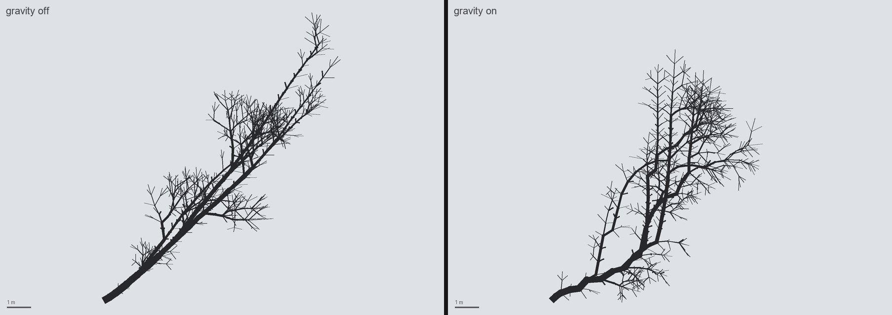
Task 117, 2026-11-26, branch room-light. CPU prototypes in Python on the Windows PC, drawn by Pillow.
The scripts are in src/: compare.py makes every picture here; m_sc.py,
m_pal.py, m_wp.py and m_gn.py are the four methods; gravity.py is the
gravity layer; graph.py, views.py and draw.py are shared. The first research is in
index.html.
Short answer. No method matches the photos yet, and I do not want to hide that. By the pictures: our Weber-Penn generator with broken leaders and the gravity layer comes closest for the whole tree (an oval crown, a fine shell of twigs, limbs that arch down and turn up at their ends). Palubicki's growth with the gravity applied each year gives the most natural limbs (crooked, level, stubs where shaded branches fell, shoots that turn up), but only with gravity on, with coarse twigs, and it is the slowest. Gao and Newberry's forks make a round bush, not a maple. Space colonisation makes a smooth vase of limbs that all rise. The gravity layer helps every method, most the ones whose limbs leave the trunk wide (Weber-Penn, Palubicki); it does little where the limbs already stand steep (space colonisation). None of the four makes the photo's hanging twig fans; they need a rule of their own (open question 5).
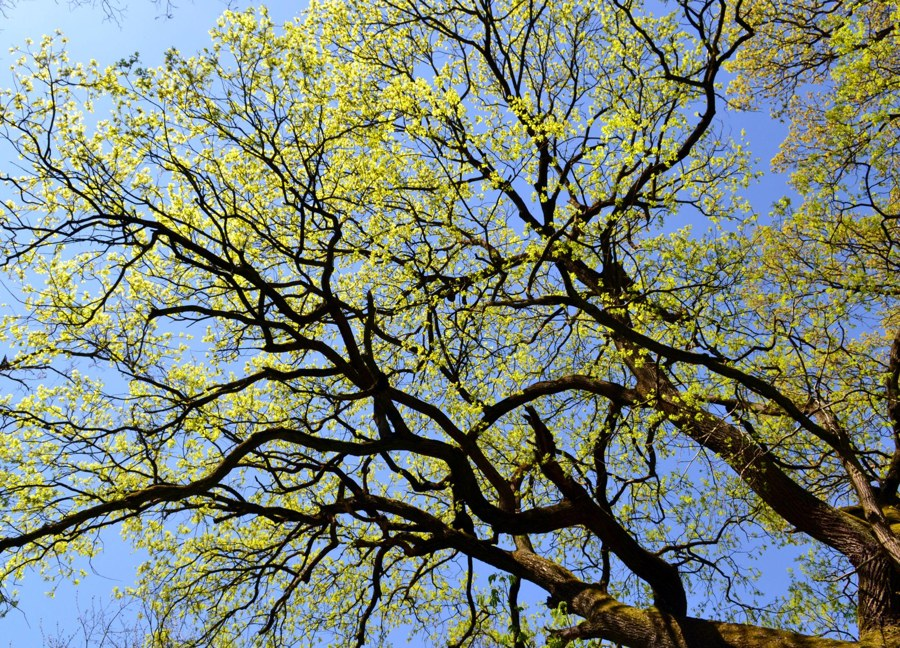
build/notes/tree-gravity/): limbs leave the trunk, arch out, sag at their far part, and the shoots on them
turn up again.A pass over the grown tree (gravity.py), the same for all four methods, switched off and on. It follows
Stava et al. 2014, Inverse Procedural Modeling of Trees, Appendix A (the paper in
build/notes/tree-gravity/spkcmdb-ipmot-14.pdf). At the foot of each piece of wood, with h its direction:
fb = GBS · m · |c − p0| · |h_H| · (1 − |h·g|), m the mass the piece carries
(itself and everything beyond it), c that mass's centre, h_H the level part of h. So a level limb with weight far out
bends most, and an upright piece does not bend sideways at all (h_H = 0).phimax = (π/2) / d^GBA, d the thickness. Thicker wood bends less.κ = M / (E·I) with I = π r⁴ / 4 (the brief's small-strain form), and
the angle saturating at phimax. I changed this from Stava's own response, because with Stava's form alone the trunk
leaned under the whole crown's weight. With the r⁴ term the trunk stays upright.The brief's checks (src/test_gravity.py, a level limb 6 m long, radius 10 cm, and variants): the tip
drops 8.8° bare and 10.1° with side twigs (heavier sags more); radius 20 cm drops 4.0° (thicker bends less); a limb rising
at 45° drops 5°; an upright one does not move. Values: GBS 1, GBA 0.5 (d in mm), E 2·10⁷ Pa, density 900 kg/m³.
E is an effective stiffness, set by eye: green maple wood is about 10 GPa, which gives almost no bend in one pass;
real limbs sag over years under growing load, which a single pass cannot see.
Two things in Stava's text I could not read for sure: the PDF's text of the last two formulas is garbled. I used a form that keeps the bend within phimax and growing with the force, as the paper says it does.
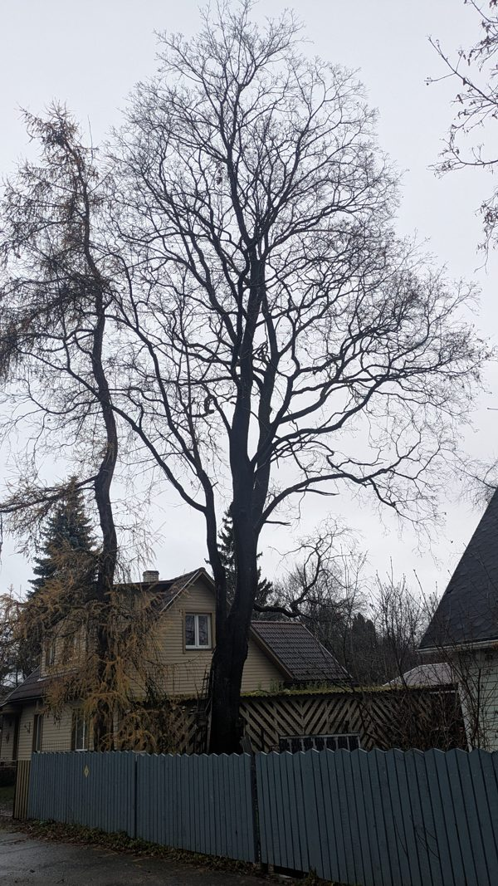
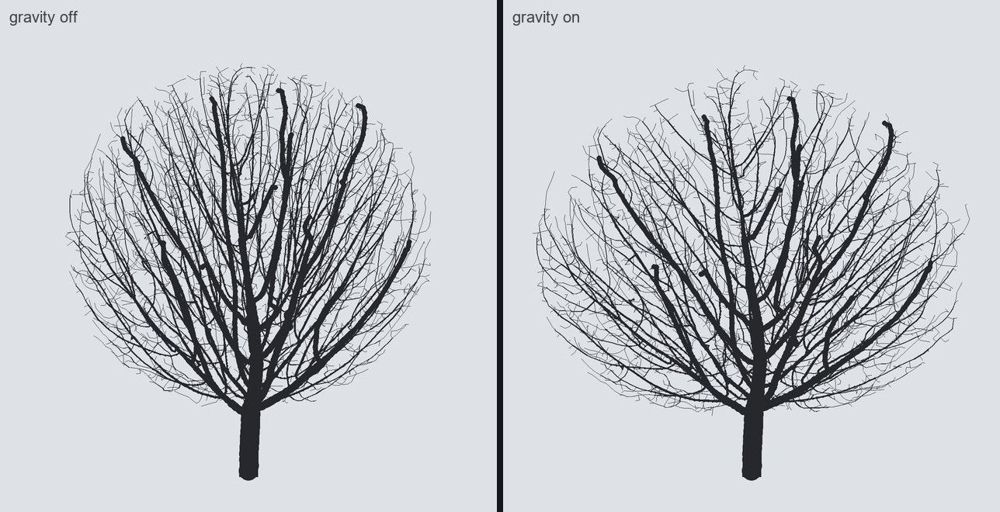
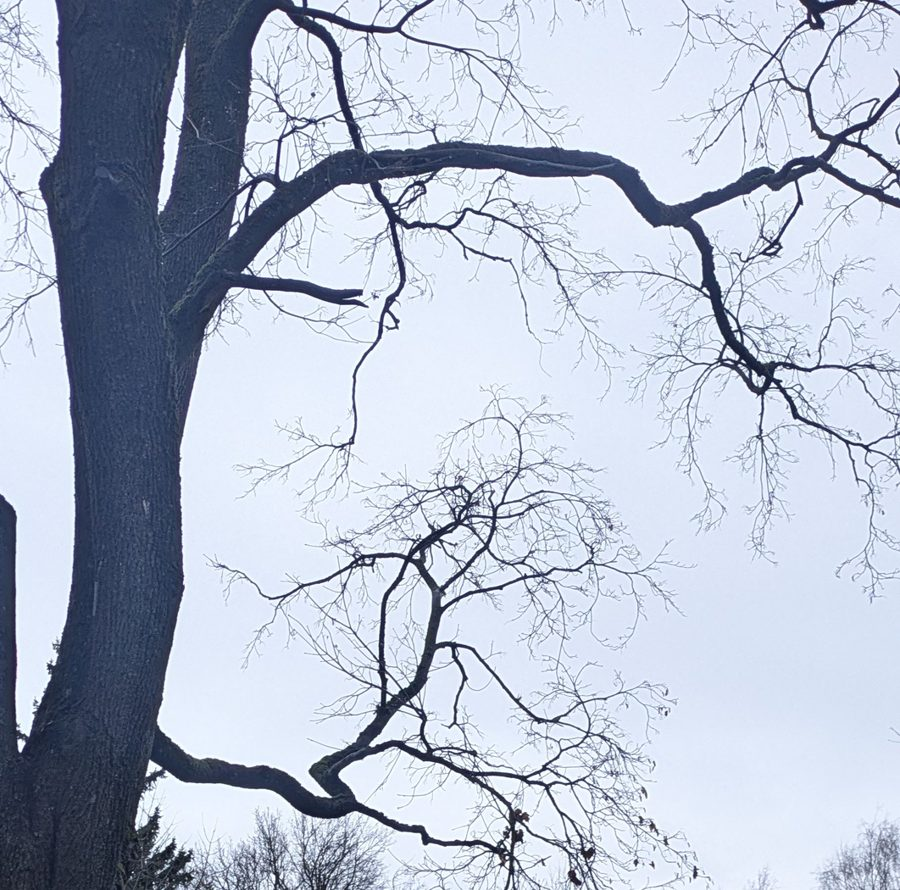
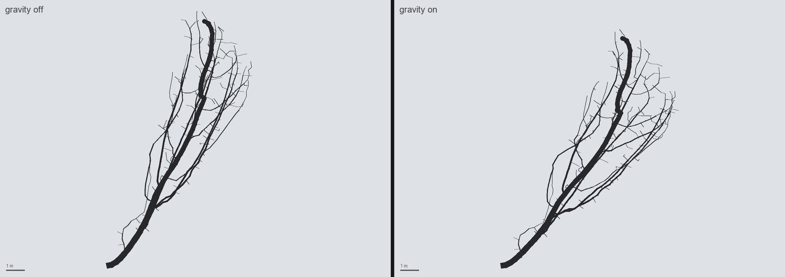
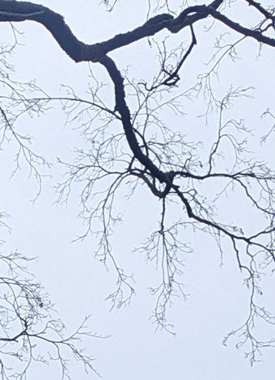
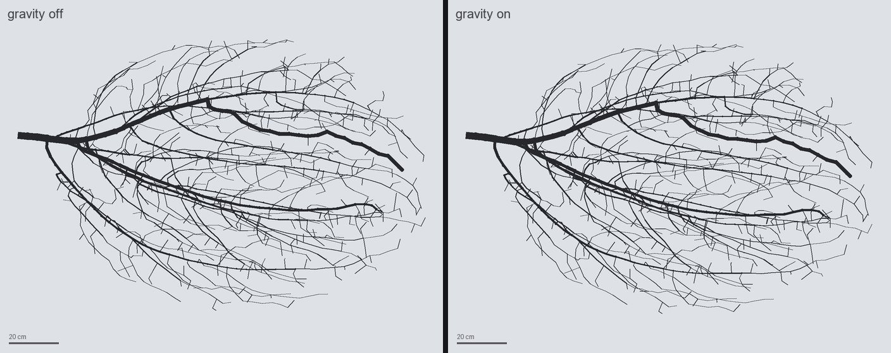
Source and parameters. The paper's algorithm: attraction points in the envelope, radius of influence di, kill distance dk, step D, a tropism vector, radii by the pipe model rn = Σ rchildn (n 2-3 in the paper). The paper gives di and dk as multiples of D; I used D 0.30 m, di 12 D, dk 2 D, 9,000 points, n 2.3, a tropism of 0.1 upward. None of the open projects named in the task use it (ez-tree, Sapling and tree-gen are all Weber-Penn).
Right: fills the envelope evenly, branches avoid each other, no visible levels. Wrong: every limb rises in a smooth curve toward the points (a vase or umbrella), the wood is never snapped, the limbs end blunt where many twigs meet at the envelope, and twigs at 30 cm steps are far too coarse.
Time: 1.5 s in Python for 10,852 segments (vectorised with numpy), gravity pass 1.0 s. In Goose with a grid for the nearest-node search, about 10-30 ms at this step; at twig detail the whole crown is out of reach (a million nodes). Cheaper path: only as a filler for holes in the shell, which the first research already said.
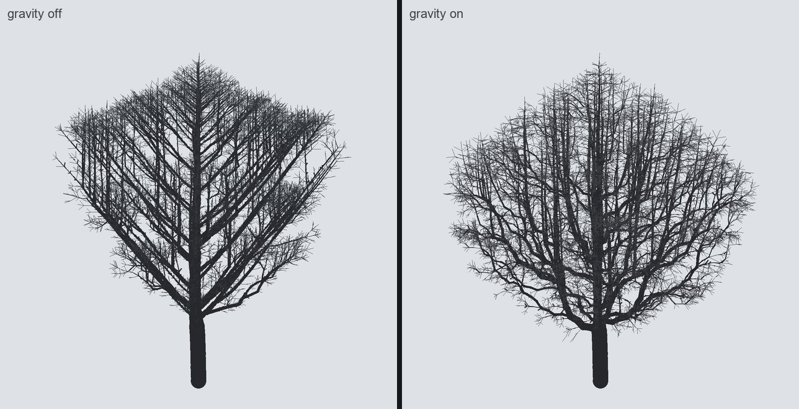

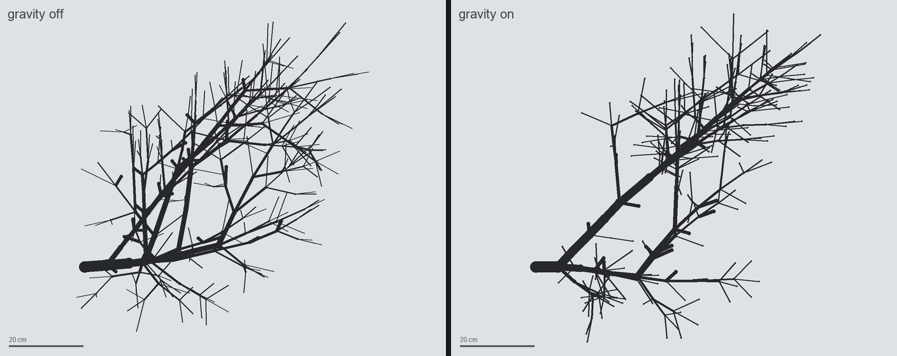
Source and parameters. All from the paper: shadow s += a·b−q in a pyramid qmax layers deep, light Q = max(C − s + a, 0), a voxel about one internode, qmax 4-8 (I used 6); bud fate by the extended Borchert-Honda model, v = α·Q at the base with α = 2, split by λ (the paper shows 0.46-0.54; 0.52 gave a conifer, 0.49 a broom, I used 0.50); floor(v) internodes per shoot; direction = default + ε·V (least shaded neighbour) + η·T (tropism); shedding by light per internode (Takenaka 1994); pipe model n 2.4. Not given in the paper, set by me: a = 0.25 (a = 1 shaded every shoot to death), ε 0.25, η 0.04 (0.12 made every shoot upright), shedding threshold 0.18. The maple's: opposite buds a quarter turn apart, 50° off the shoot; no side shoots under 3 m (Stava's LB_PF). No light outside the envelope. 36 years of 0.30 m internodes.
Right: bare inner limbs, stubs, natural asymmetry, and with gravity each year the limbs come out level and crooked with shoots turning up, as in the reference photos. Wrong: without gravity it reads as a conifer; it keeps one leader (the photo forks); twigs are 30 cm long and too thick; many tuning terms are not in the paper. The bends depend on the year-by-year growth, so the limb shown differs between off and on.
Time: 36 s in Python for 24,292 segments, 37 s with the yearly bend (25,576). Scaled by our own port's ratio
(below), about 60 ms in Goose on the Mac at this detail, 10-20 ms at 0.45 m internodes. Twig detail (5 cm) is about
700,000 internodes in the paper's own table: far over the 100 ms and over MAX_WHOLE_SEGMENTS.
Cheaper path: grow it coarsely for the limbs only and put twigs on them by another rule; or keep only its shadow
grid for dieback, as the first research proposed.
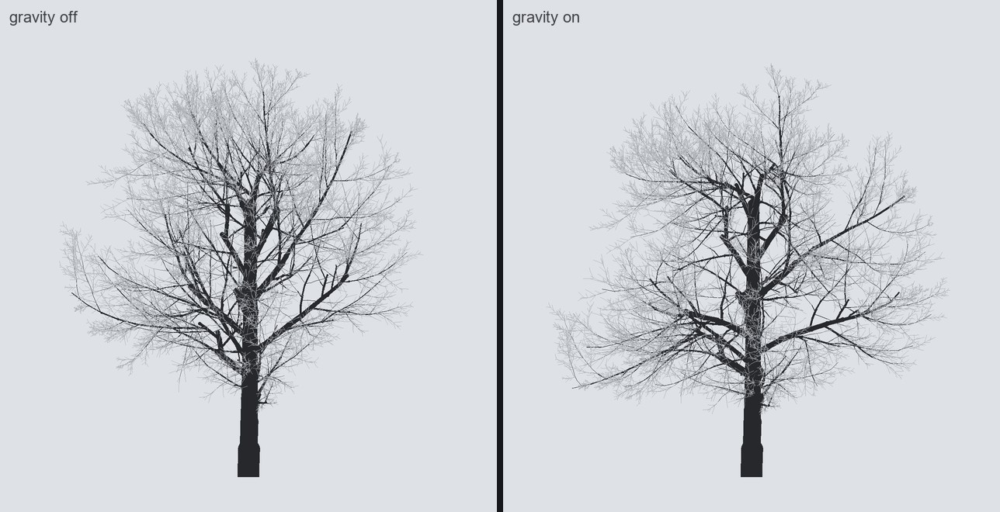
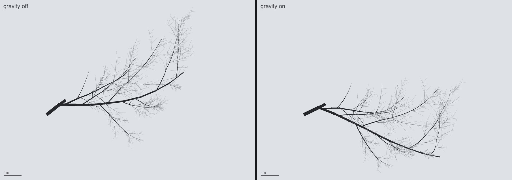
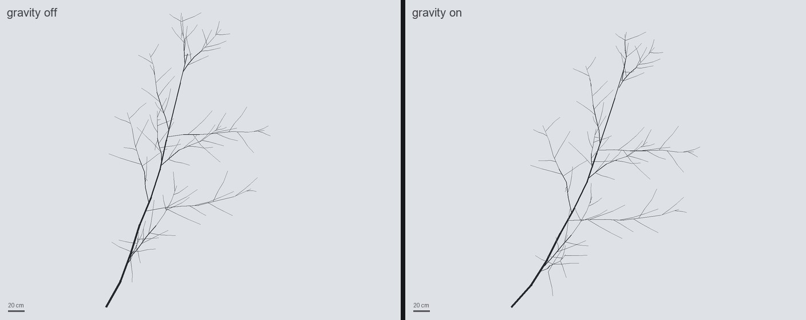
Source and parameters. grow_whole and grow_part from
src/model3d/tree_whole.goose, ported line by line to Python in metres, with MAPLE_HABIT and the
old-leader Whole of rooms.goose, no culling. Weber and Penn 1995's terms, as Blender's Sapling and
friggog/tree-gen name them: nBranches (our children), downAngle (angle), length ratio (ratio), curveV (crook),
attractUp (rise). Their parameter tables are hand-tuned by the authors per species and have no maple; tree-gen's
acer.py preset is its author's own (it gets its crookedness from curveV 100-200), not the paper's. ez-tree
is the same family: its gnarliness grows as 1/√r and its growth force turns a piece by at most strength/r, so both act
more on thin wood, which is a cheap tropism by thickness. Ours were tuned by eye in task 107. For the comparison the
sag term is off in both halves; the gravity layer replaces it.
Broken leaders, added: on limbs and branches with wood of 5-35 cm across, 1-3 elbows a limb (0-1 a branch): the axis goes on as a stub (30-70 % of a segment), the side shoot takes over 22 % thinner, turned 30-50°.
Right: the frame we keep (trunk, hero limbs, envelope, culling, dice per branch) is unchanged; the oval crown and the twig shell are the best of the four; with gravity the limbs arch as in the photos. Wrong: the wood is still regular (children at even steps, the same kind at each level), the elbows are few and hard to see at the whole tree's size, the fans are combs, not fans.
Time: 3.7 s in Python for 49,053 segments; the gravity pass 3.6-3.9 s. Goose does today's growth in 6.5 ms (with leaves), about 570 times faster than this port: I used that ratio for all the Goose estimates here. So: elbows cost nothing, the gravity pass about 6 ms, total about 13 ms on the Mac. Cheaper path for the gravity: bend only wood over 1 cm and carry the rotation to the twigs (a fifth of the nodes), or bend once per axis.
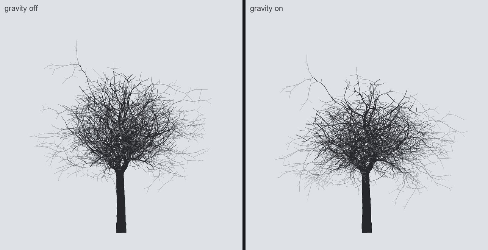
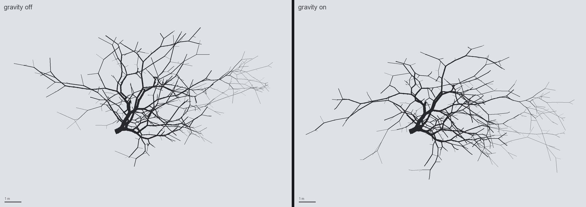
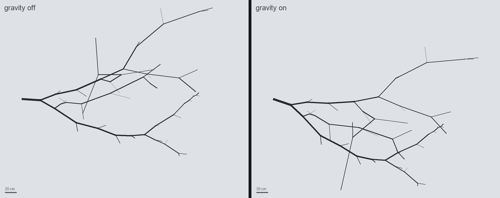
Source and parameters. grove.js (github.com/mnewberry/treescale), as published, is 2D: every node forks in two; asymmetry a = 1/(u(1 − 1/A) + 1/A) with A = 4; radii keep rα (α 1-3 in its demo), lengths keep lβ with β = 2; the thin side leaves at atan(a), the thick at atan(1/a); each child's angle is blended 30 % toward 81° ("wind"). Mine, from the task: α 2.3, A 6, the fork's plane a quarter turn from the last, lengths scaled by the room to the envelope, broken leaders in 5-35 cm wood (10 % a fork), dieback in the core. In place of the wind, Palubicki's tropism by thickness: thick wood pulled up (0.6), thin wood pulled toward level (0.25). The growth's tropism no longer pulls thin wood down: that is now the gravity layer's work (the first research did both in one term, which made the mat of twigs under the crown).
Right: two rules give natural forks and thickness; fast. Wrong: it makes a bush, not a maple: with a uniform asymmetry most forks are near-even, so a limb splits into a tangle at once instead of running long with small side shoots; the leader wanders and does not reach the top; this is the user's verdict on the first research, and the new terms did not fix it.
Time: 0.8 s in Python for 10,198 segments, gravity 0.9 s; in Goose about 1.5 ms plus 1.5 ms.
| Method | Segments (off / on) | Python, grow | Python, gravity | Goose on the Mac, estimate | Fits the limits? |
|---|---|---|---|---|---|
| a. Space colonisation | 10,852 | 1.5 s | 1.0 s | 10-30 ms (with a grid) | Yes, but twigs only at 30 cm |
| b. Palubicki, 0.30 m | 24,292 / 25,576 | 36 s | in the growth | about 60 ms; 10-20 ms at 0.45 m | Yes at low detail, no at twig detail |
| c. Weber-Penn + elbows | 49,053 | 3.7 s | 3.7 s | about 13 ms (6.5 ms today) | Yes |
| d. Gao-Newberry | 10,198 | 0.8 s | 0.9 s | about 3 ms | Yes |
Python 3.14 on the Windows PC. MAX_WHOLE_SEGMENTS is 80,000 and MAX_CARDS 160,000; leaves were
not grown in this round. The Goose estimates use one ratio (our own port of today's generator against its measured
6.5 ms), so they are rough, more so for numpy-heavy code (space colonisation). All of them keep flat arrays: the
gravity pass is one loop over the nodes in order with a 3 x 3 matrix each, no allocation.
Keep Weber-Penn's frame and its twig shell, add the broken leaders and the gravity layer (replacing
Habit.sag), and take from Palubicki only what showed in the pictures: the shedding with stubs and, later,
the shadow grid for dieback. Drop Gao and Newberry's forks as the main rule (the task's path), since its pictures are
the furthest from the photos. This changes the task's chosen path, so it waits for the user's answer.
hang_sag?